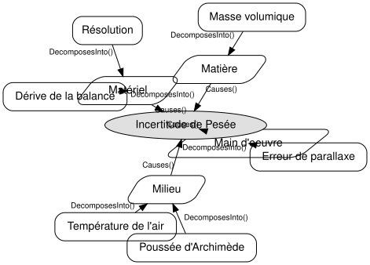
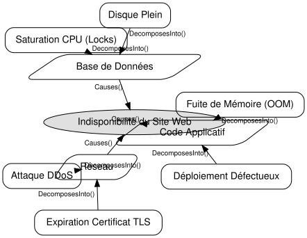

CausalGraphs.jl
A Julia-native framework for representing, analyzing, composing, comparing, and visualizing cause-effect knowledge and models.
Domain-independent causal relationships.
Cause-Effect Knowledge
Build structured graphs independent from models and views.
Multiple Models
Derive models from a single knowledge base without duplication.
Metrology Support
First-class integration with uncertainty propagation workflows.
Introduction
CausalGraphs.jl est une bibliothèque Julia qui permet de modéliser, d'analyser et de visualiser de manière rigoureuse les relations de cause à effet.
Contrairement à un simple outil de dessin, CausalGraphs.jl sépare strictement la connaissance (le graphe des relations) de ses vues (Diagrammes d'Ishikawa, graphes de dépendance) et de ses modèles (modèles de mesure, propagation d'incertitudes, arbres de défaillance).
Cas d'usages courants
- Métrologie et Incertitudes : Cartographier les sources d'incertitude dans un modèle de mesure (ex: Ishikawa / GUM) pour générer automatiquement le modèle mathématique de propagation.
- Ingénierie Système et Fiabilité : Modéliser les arbres de défaillances (Fault Trees) pour identifier les causes racines d'un problème complexe.
- Analyse d'Incidents (Root Cause Analysis) : Enregistrer de façon formelle "ce qui a causé quoi" pour capitaliser la connaissance suite à une panne informatique ou industrielle.
Exemples Visuels (Diagrammes d'Ishikawa)
Grâce à son architecture découplée, un même graphe de connaissances peut être exporté sous forme visuelle.
Exemple 1 : Métrologie (Étalonnage d'une masse)
Voici comment construire l'arbre des causes d'incertitude typique lors d'une pesée.
using CausalGraphs
using GraphViz
# 1. Création du graphe
g = CauseEffectGraph()
# 2. Ajout de l'effet principal (le problème ou la mesure)
effect = add_effect!(g, "Incertitude de Pesée")
# 3. Ajout des catégories (les fameux "5M")
mat = add_category!(g, "Matière")
mil = add_category!(g, "Milieu")
mat_eq = add_category!(g, "Matériel")
mo = add_category!(g, "Main d'oeuvre")
# 4. Liaison de l'effet aux catégories
add_edge!(g, mat, effect)
add_edge!(g, mil, effect)
add_edge!(g, mat_eq, effect)
add_edge!(g, mo, effect)
# 5. Ajout des causes racines
add_cause!(g, mil, "Température de l'air")
add_cause!(g, mil, "Poussée d'Archimède")
add_cause!(g, mat_eq, "Dérive de la balance")
add_cause!(g, mat_eq, "Résolution")
add_cause!(g, mat, "Masse volumique")
add_cause!(g, mo, "Erreur de parallaxe")
# 6. Rendu visuel automatique via GraphViz
GraphViz.Graph(to_dot(g))
Exemple 2 : Ingénierie Logicielle (Panne Serveur)
Modélisons maintenant une investigation suite à un crash serveur dans une infrastructure web.
using CausalGraphs
using GraphViz
g_it = CauseEffectGraph()
crash = add_effect!(g_it, "Indisponibilité du Site Web")
db = add_category!(g_it, "Base de Données")
net = add_category!(g_it, "Réseau")
code = add_category!(g_it, "Code Applicatif")
add_edge!(g_it, db, crash)
add_edge!(g_it, net, crash)
add_edge!(g_it, code, crash)
add_cause!(g_it, db, "Saturation CPU (Locks)")
add_cause!(g_it, db, "Disque Plein")
add_cause!(g_it, net, "Attaque DDoS")
add_cause!(g_it, net, "Expiration Certificat TLS")
add_cause!(g_it, code, "Fuite de Mémoire (OOM)")
add_cause!(g_it, code, "Déploiement Défectueux")
# Rendu visuel
GraphViz.Graph(to_dot(g_it))
API Reference
CausalGraphs.AbstractModel — Type
AbstractModelAutomatically generated docstring for AbstractModel.
CausalGraphs.AbstractNode — Type
AbstractNodeAutomatically generated docstring for AbstractNode.
CausalGraphs.CategoryNode — Type
CategoryNodeAutomatically generated docstring for CategoryNode.
CausalGraphs.CauseEffectGraph — Type
CauseEffectGraphAutomatically generated docstring for CauseEffectGraph.
CausalGraphs.CauseNode — Type
CauseNodeAutomatically generated docstring for CauseNode.
CausalGraphs.Causes — Type
CausesAutomatically generated docstring for Causes.
CausalGraphs.ContributesTo — Type
ContributesToAutomatically generated docstring for ContributesTo.
CausalGraphs.DecomposesInto — Type
DecomposesIntoAutomatically generated docstring for DecomposesInto.
CausalGraphs.DependsOn — Type
DependsOnAutomatically generated docstring for DependsOn.
CausalGraphs.Edge — Type
EdgeAutomatically generated docstring for Edge.
CausalGraphs.EffectNode — Type
EffectNodeAutomatically generated docstring for EffectNode.
CausalGraphs.IntermediateNode — Type
IntermediateNodeAutomatically generated docstring for IntermediateNode.
CausalGraphs.IshikawaLayout — Type
IshikawaLayoutA structural layout representing an Ishikawa (Fishbone) diagram. Stores the main effect, category branches, and the underlying root causes for each category.
CausalGraphs.MeasurementModel — Method
MeasurementModelAutomatically generated docstring for MeasurementModel.
CausalGraphs.Model — Type
ModelAutomatically generated docstring for Model.
CausalGraphs.Model — Method
ModelAutomatically generated docstring for Model.
CausalGraphs.NodeID — Type
NodeIDAutomatically generated docstring for NodeID.
CausalGraphs.RelationshipType — Type
RelationshipTypeAutomatically generated docstring for RelationshipType.
CausalGraphs.add_category! — Method
add_category!Automatically generated docstring for add_category!.
CausalGraphs.add_cause! — Method
add_cause!Automatically generated docstring for add_cause!.
CausalGraphs.add_cause! — Method
add_cause!Automatically generated docstring for add_cause!.
CausalGraphs.add_edge! — Function
add_edge!Automatically generated docstring for add_edge!.
CausalGraphs.add_effect! — Method
add_effect!Automatically generated docstring for add_effect!.
CausalGraphs.add_input! — Method
add_input!Automatically generated docstring for add_input!.
CausalGraphs.add_intermediate! — Method
add_intermediate!Automatically generated docstring for add_intermediate!.
CausalGraphs.add_to_model! — Method
add_to_model!Automatically generated docstring for add_to_model!.
CausalGraphs.add_to_model! — Method
add_to_model!Automatically generated docstring for add_to_model!.
CausalGraphs.ancestors — Method
ancestorsAutomatically generated docstring for ancestors.
CausalGraphs.compare_models — Method
compare_modelsAutomatically generated docstring for compare_models.
CausalGraphs.descendants — Method
descendantsAutomatically generated docstring for descendants.
CausalGraphs.direct_causes — Method
direct_causesAutomatically generated docstring for direct_causes.
CausalGraphs.direct_effects — Method
direct_effectsAutomatically generated docstring for direct_effects.
CausalGraphs.edge_from_dict — Method
edge_from_dictAutomatically generated docstring for edge_from_dict.
CausalGraphs.has_cycles — Method
has_cyclesAutomatically generated docstring for has_cycles.
CausalGraphs.is_valid — Method
is_validAutomatically generated docstring for is_valid.
CausalGraphs.load — Method
load(path::String)Loads a causal graph from a file. The format is inferred from the file extension. Supported formats: .json.
CausalGraphs.node_from_dict — Method
node_from_dictAutomatically generated docstring for node_from_dict.
CausalGraphs.paths — Method
pathsAutomatically generated docstring for paths.
CausalGraphs.print_tree — Method
print_tree(g, root_id; indent)Prints a text-based tree representation of the causal graph.
CausalGraphs.read_json — Method
read_jsonAutomatically generated docstring for read_json.
CausalGraphs.rel_from_string — Method
rel_from_stringAutomatically generated docstring for rel_from_string.
CausalGraphs.root_causes — Method
root_causesAutomatically generated docstring for root_causes.
CausalGraphs.save — Method
save(path::String, g)Saves the causal graph or model to a file. The format is inferred from the file extension. Supported formats: .json, .dot (GraphViz).
CausalGraphs.set_output! — Method
set_output!Automatically generated docstring for set_output!.
CausalGraphs.to_dict — Method
to_dictAutomatically generated docstring for to_dict.
CausalGraphs.to_dict — Method
to_dictAutomatically generated docstring for to_dict.
CausalGraphs.to_dict — Method
to_dictAutomatically generated docstring for to_dict.
CausalGraphs.to_dict — Method
to_dictAutomatically generated docstring for to_dict.
CausalGraphs.to_dict — Method
to_dictAutomatically generated docstring for to_dict.
CausalGraphs.to_dict — Method
to_dictAutomatically generated docstring for to_dict.
CausalGraphs.to_dict — Method
to_dictAutomatically generated docstring for to_dict.
CausalGraphs.to_dot — Method
to_dot(g)Generates a GraphViz DOT string representation of the graph.
CausalGraphs.write_json — Method
write_jsonAutomatically generated docstring for write_json.